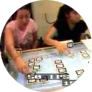

NEWS
Community-driven Learning Citizen Science
This project is funded by the NSF Advances in Informal Science Learning Program. The Principle Investigators from UNC Charlotte, University of Maryland, and University of Colorado are leading a crowd sourcing approach to designing learning experiences in nature preserves using principles from citizen science. The project builds on distributing citizen science learning apps on mobiles phones, tabletop computers, and web servers. This is funded with $2.4M across the 3 universities for 4 years.
The Connected LearnerThis project is funded by the NSF Revolutionizing Engineering (and Computer Science) Education Program. The Principles Investigators: Mary Lou Maher, Bojan Cukic, Larry Mays, Celine Latulipe, Jamie Payton, and Audrey Rorrer are leading a significant change in CS education with advances in flipped classrooms, lightweight teams and community/professional learning in the classroom. This is funded with $2M over 5 years.
 |
 |
 |
| Collective Intelligence | Curious Places | Creative Interfaces |
CURRENT POSITIONS
Chair of the Department of Software and Information Systems, College of Computing and Informatics, UNC Charlotte: The Department of Software and Information Systems (SIS) is best known for its teaching and research in intelligent systems, human centered design, and cyber security. The Department has 20 faculty, 55 PhD students, 200 MS students, and 330 undergraduate students. SIS contributes significantly to regional and international efforts in Cybersecurity, Data Science, and CS Education research.
Director of the Center for Education Innovation, College of Computing and Informatics, UNC Charlotte: The Center for Education Innovation (CEI) was established in 2013 to focus and encourage innovation in CS education. The CEI has over 20 externally funded projects in flipped classroom education, lightweight teams, innovative digital technologies for education, and service learning. The CEI places an emphasis on CS education methods that develop T-shaped computing professionals and researchers.
Professor in the HCI Lab, Department of Software and Information Systems, College of Computing and Informatics, UNC Charlotte: The HCI Lab at UNC Charlotte focuses on creativity, ubiquitous computing, novel interaction technologies, recommender systems, interaction with big data, and usable security. The HCI Lab has 4 faculty, 4-6 undergraduate researchers, 1-3 MS researchers, 12-15 PhD students, and a Research Professor.
Honorary Professor in the Design Lab, Faculty of Architecture, Design and Planning, University of Sydney: The Design Lab at the University of Sydney is best known for its undergraduate program called the Bachelor of Design Computing, the M-IDEAS program, and its PhD program in computation, design, and creativity